6 月 25 日：MJEPA 等视觉表征论文归档
本页按日期归档近期论文，保留优先级、主题、来源与方法线索，方便回看同一批工作的研究脉络。
先读 MJEPA。把 JEPA 从单模态推进到共享音视频 encoder，直接服务大规模视频自监督表征。 其余论文按 P1/P2 与主题顺序扫读，重点看方法图、消融设置和是否能迁移到通用视觉表征。
论文索引
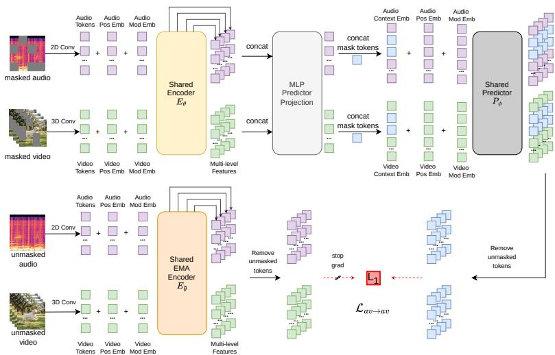
MJEPA: A Simple and Scalable Joint-Embedding Predictive Architecture for Audio-Visual Learning
高相关；详见方法、贡献和实验边界。
方法：把 JEPA 从单模态推进到共享音视频 encoder，直接服务大规模视频自监督表征
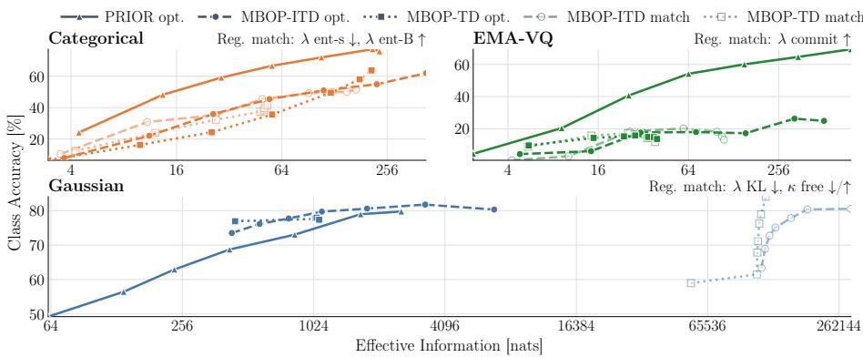
Semantic Allocation in Ordered Bottlenecks: Predictive Residual Inference for Visual Representation Learning
高相关；详见方法、贡献和实验边界。
方法：用 residual predictors 让 token budget 从粗到细承载信息，可直接启发可压缩视觉表征
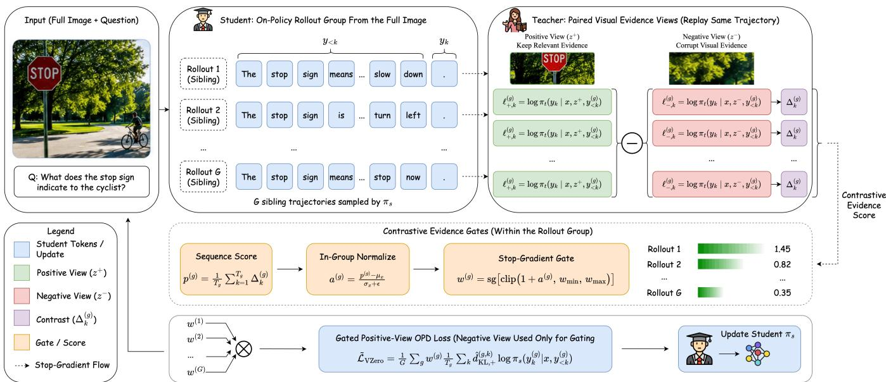
V-Zero: Answer-Label-Free On-Policy Distillation with Contrastive Evidence Gating for Fine-Grained Visual Reasoning
高相关；详见方法、贡献和实验边界。
方法：把 on-policy distillation 和负视觉视图 gating 结合，减少对答案标注的依赖
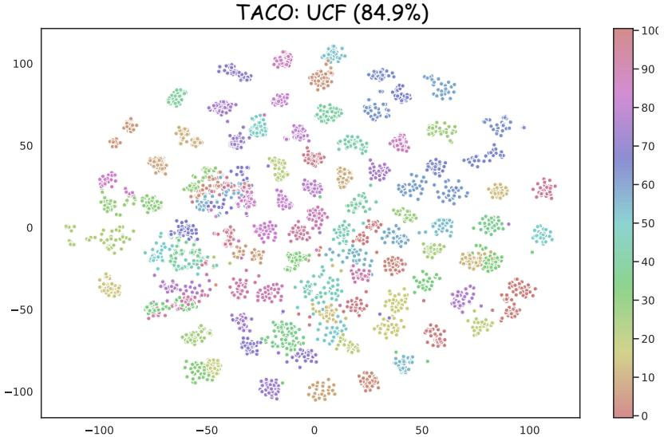
TACO: Towards Task-Consistent Open-Vocabulary Adaptation in Video Recognition
高相关；详见方法、贡献和实验边界。
方法：关注 CLIP 视频适配时表征几何偏移，OpenReview 旧状态为 ICLR 2026 withdrawn
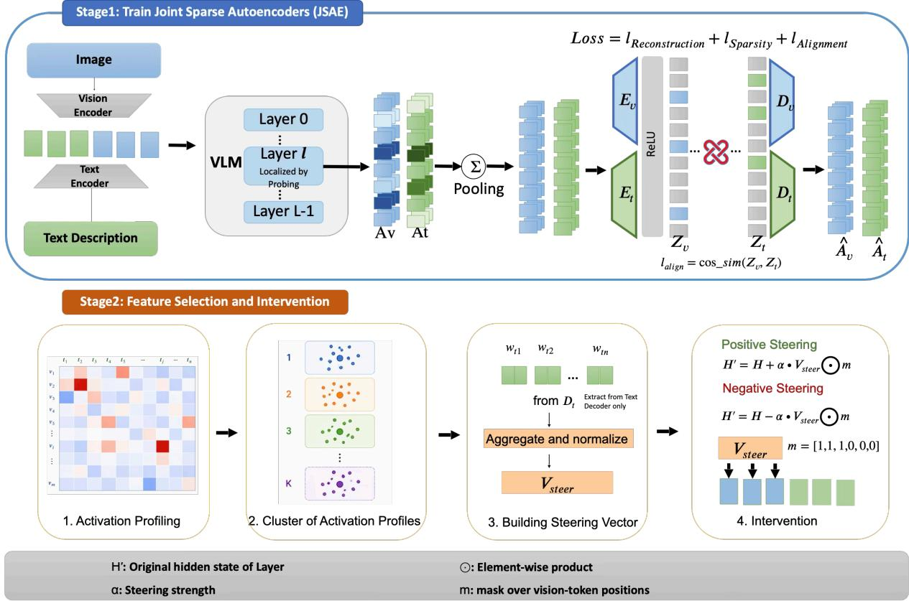
Steering Vision-Language Models with Joint Sparse Autoencoders
中高相关；详见方法、贡献和实验边界。
方法：把 SAE 做成显式跨模态对齐的 steerable features，适合诊断视觉语言表征
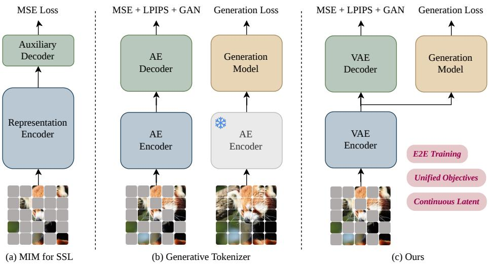
MIMFlow: Integrating Masked Image Modeling with Normalizing Flows for End-to-End Image Generation
中高相关；详见方法、贡献和实验边界。
方法：把 MIM latent semantics 接入 normalizing flows，线性 probe 与生成指标都有报告
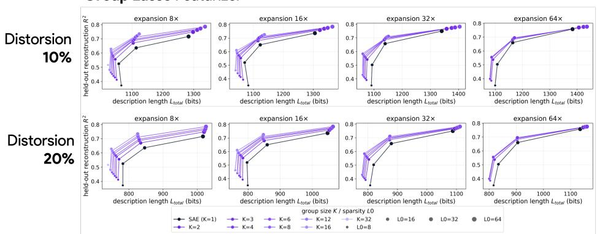
Structuring Sparsity: Block-Sparse Featurizers Capture Visual Concept Manifolds
中高相关；详见方法、贡献和实验边界。
方法：从单方向概念转向低维概念流形，并在 DINOv3/扩散模型里做可解释控制
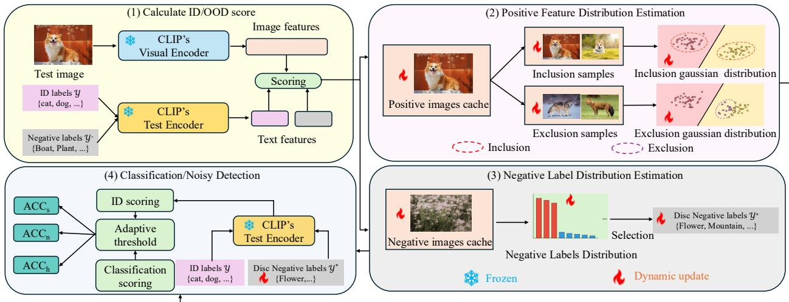
Dual Distribution Estimation for Zero-shot Noisy Test-Time Adaptation with VLMs
中高相关；详见方法、贡献和实验边界。
方法：用正/负分布建模提升 zero-shot noisy TTA，强调视觉语言特征空间的鲁棒校准
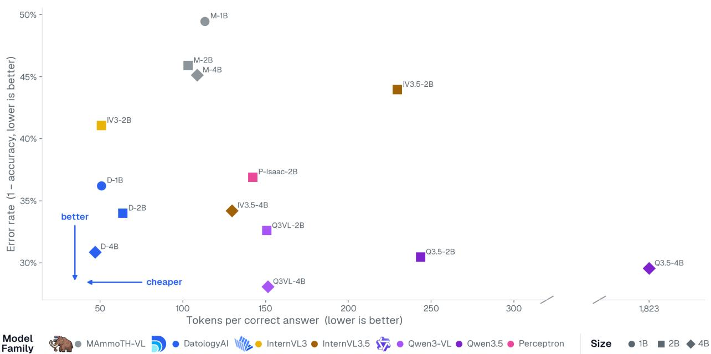
Brevity is the Soul of Inference Efficiency: Inducing Concision in VLMs via Data Curation
中相关；详见方法、贡献和实验边界。
方法：把 VLM 输出长度和正确率一起纳入预训练数据策展，提示数据质量会改变推理成本
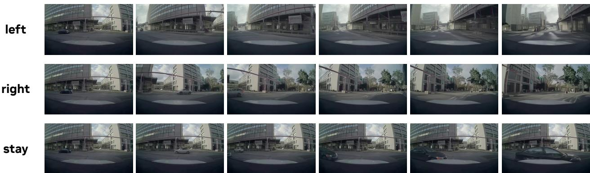
Causal-rCM: A Unified Teacher-Forcing and Self-Forcing Open Recipe for Autoregressive Diffusion Distillation in Streaming Video Generation and Interactive World Models
中相关；详见方法、贡献和实验边界。
方法：不是 SSL 表征论文，但 teacher/self-forcing 的视频蒸馏 recipe 对视频基础模型有参考价值
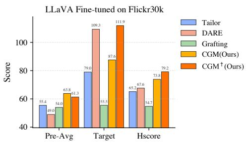
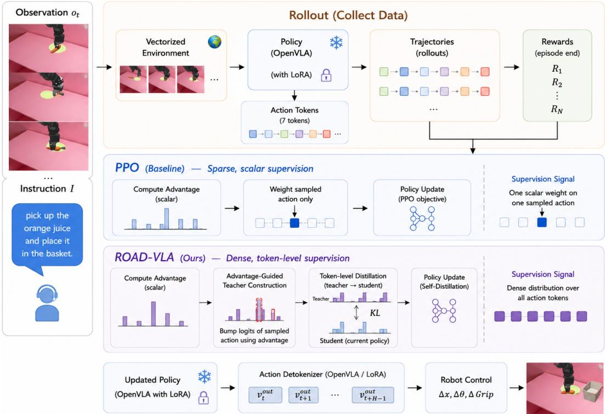
ROAD-VLA: Robust Online Adaptation via Self-Distillation for Vision-Language-Action Models
中相关；详见方法、贡献和实验边界。
方法：偏机器人 VLA，但 advantage-guided action-space self-distillation 可作为多模态策略适配参考
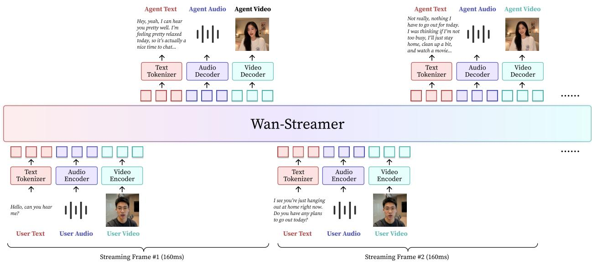
Wan-Streamer v0.1: End-to-end Real-time Interactive Foundation Models
中相关；详见方法、贡献和实验边界。
方法：全双工音视频文本流式基础模型，离 SSL 较远，但对视频/多模态 token 调度有背景价值